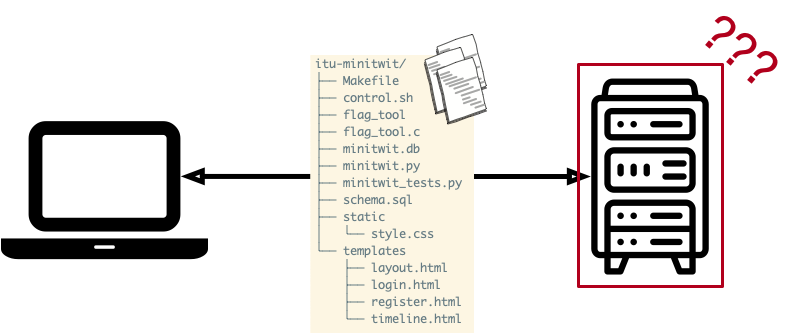
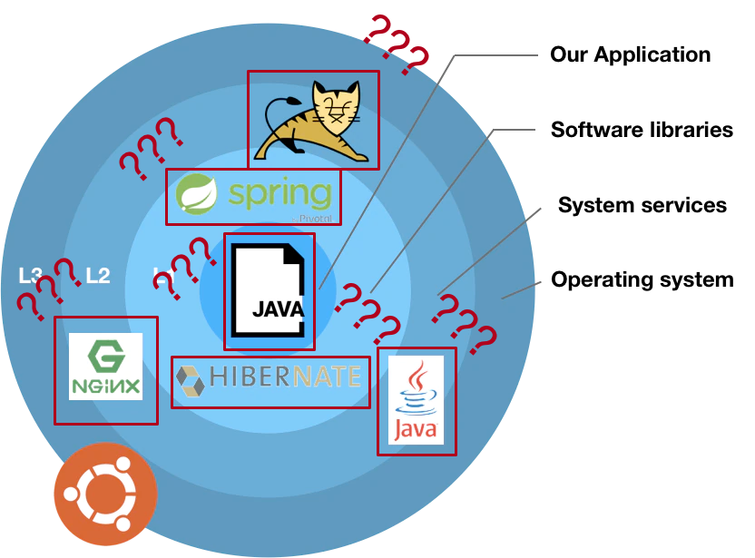
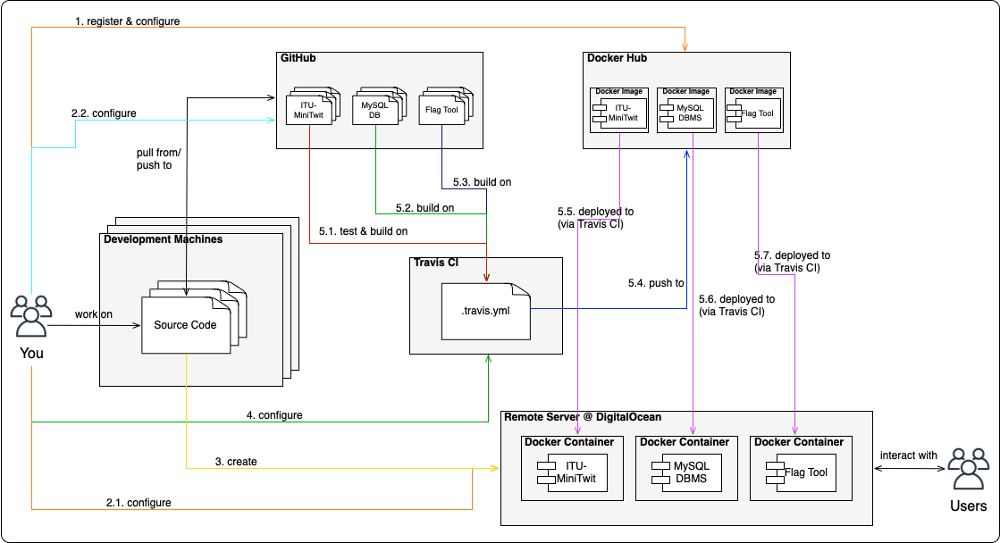
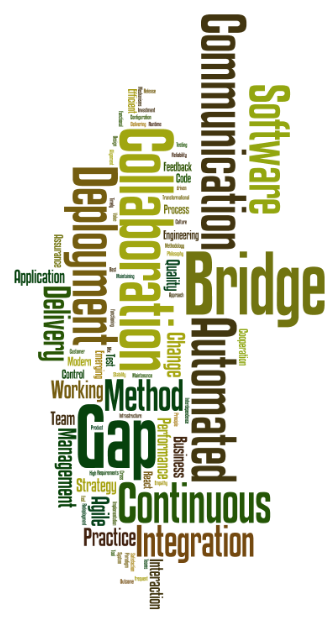
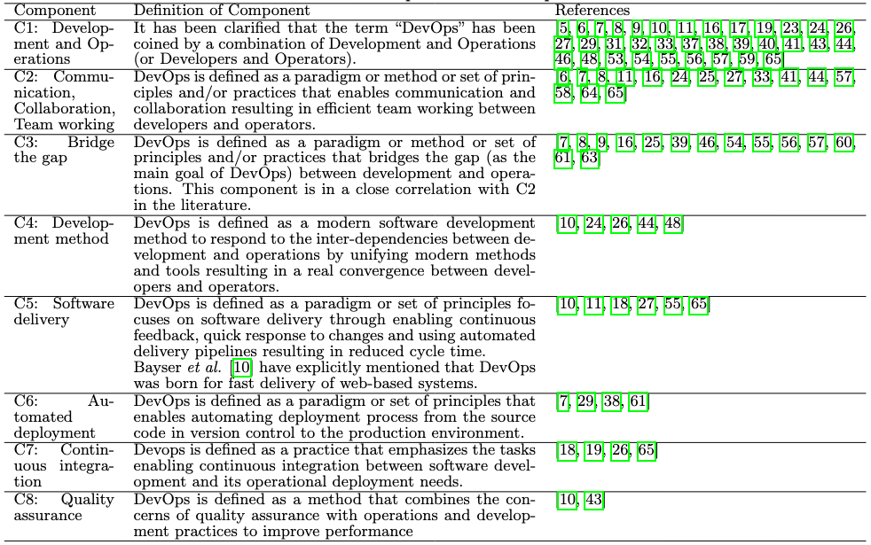
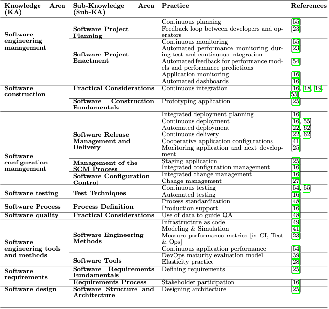

class: center, middle <img src="https://www.saa-authors.eu/picture/739/ftw_768/saa-mtcwmza4nzq5mq.jpg" width=40%/> # DevOps, Software Evolution and Software Maintenance Helge Pfeiffer, Associate Professor,<br> [Research Center for Government IT](https://www.itu.dk/forskning/institutter/institut-for-datalogi/forskningscenter-for-offentlig-it),<br> [IT University of Copenhagen, Denmark](https://www.itu.dk)<br> `ropf@itu.dk` --- class: center, middle # Feedback --- ### How are you after starting refactoring? --- ### Release Activity <iframe width="900" height="500" src="http://138.68.66.124/release_activity_weekly.svg" frameborder="0" allowfullscreen ></iframe> --- ### Weekly Commit Activity <iframe width="900" height="500" src="http://138.68.66.124/commit_activity_weekly.svg" frameborder="0" allowfullscreen ></iframe> --- ### The Simulator starts today! The TAs will start the simulator **today** in the end of the exercise session (in between 13:00 and 14:00). **Make sure that the given tests pass and that the provided simulator script runs against your endpoint without any errors!** In case you have not done so yet, send a pull request to `repositories.py` in our central repository: https://github.com/itu-devops/lecture_notes/blob/master/repositories.py! Only **11/17** groups have done so yet. The remaining six groups, please add two URLs: * One to your running applications (edit `"http://<minitwit_application_url>"`) * Another one to the simulator API endpoint (edit `"http://<sim_api_url>"`) <img src="https://i.gifer.com/8oyI.gif" width="40%"> --- ### Responses from the API that are correct * group_X: GET http://<your_host>/latest → - ✗ 404 page not found - ✗ 0 - ✗ group_X: 500 - ✗ {'latest': 700} - ✓ {'latest': -1} - ✗/✓ {'latest': 0} Please fix these as very first task in exercises. --- ### Assorted Feedback - Please empty your database before the simulator starts. Currently, it should not contain any messages from your test script. - Please fix and complete [the groups registration file](https://ituniversity.sharepoint.com/:x:/r/sites/2025DevOpsSoftwareEvolutionandSoftwareMaintenance/Shared%20Documents/General/Groups.xlsx?d=w9e78fb7185394cb5b45c64a0a10b7683&csf=1&web=1&e=QGotDW) - How to implement the API without a lot of code duplication and with the possibility to remove it from the application after simulation? - E.g., with feature flags [C♯ example](https://learn.microsoft.com/en-us/dotnet/architecture/cloud-native/feature-flags) in other languages there are other libraries, one could use simple if statements, or preprocessor directives. --- ### Guest lecture slides and Netiquette Mircea added Sofus' guest lecture material to [Teams](https://ituniversity.sharepoint.com/:b:/r/sites/2025DevOpsSoftwareEvolutionandSoftwareMaintenance/Shared%20Documents/General/DevOps%20Culture%20and%20Agile%20Mindset-%20ITU.pdf?csf=1&web=1&e=Hs3oOq) Please do not share it on other services! Sofus and Eficode wish to share this material with you but not publicly with other parties. In case you want to share the material with others, e.g., at work, ask Sofus for permission. --- ### Sofus talked psychological safety... But how to do it? A former student from ITU [Mikkel Agerlin Christensen](https://addresstheelephant.io/about-me) created the following page with tools that might help you establishing a psychological safe working environment. <img src="https://addresstheelephant.io/assets/images/mikkel-d3ed8546a5203dcdd496f325947d0a43.png" width="20%"> https://addresstheelephant.io/docs/intro/ <!-- https://www.ted.com/talks/rafael_chiuzi_the_case_for_psychological_safety_and_better_teams --> --- ## Getting bored today? <img src="http://static3.businessinsider.com/image/4fbfb86becad044879000001-506-253/suddenly-startups-have-gotten-very-boring.jpg" width="40%"> [Did you really read the first part of Part 1 of the DevOps Handbook?](https://ituniversity-my.sharepoint.com/:b:/g/personal/ropf_itu_dk/Eafg4B4afaxIqYGDYJqOJLQBycrIZ8JwkokFy4j9JuWiuQ?e=OH5SzC) --- class: center, middle # Configuration Management --- ### What did we do so far? #### Topic two weeks ago: Automatic creation of virtual machines?  * We looked at various ways of creating virtual machines (remote servers) --- ### What did we do so far? * We **did not** look explicitly on what happens after a VM is created and before it can be used by our application. <img src="https://www.bbva.com/wp-content/uploads/2018/05/image_0-1.png" width="80%"> <tiny> Image origin: <a href="https://www.bbva.com/en/vulnerability-management-in-dependencies-in-ci-cd-environments-with-open-source-tools/">https://www.bbva.com/en/vulnerability-management-in-dependencies-in-ci-cd-environments-with-open-source-tools </a> </tiny> --- ### Where does all the software come from?  * How did we get software on our servers? --- #### Perhaps you remember our use of Vagrantfiles These describe characteristics of provisioned virtual machines: ```ruby Vagrant.configure("2") do |config| config.vm.box = 'digital_ocean' config.vm.box_url = "https://github.com/devopsgroup-io/vagrant-digitalocean/raw/master/box/digital_ocean.box" config.ssh.private_key_path = '~/.ssh/id_rsa' config.vm.synced_folder ".", "/vagrant", type: "rsync" config.vm.define "dbserver", primary: true do |server| server.vm.provider :digital_ocean do |provider| provider.ssh_key_name = ENV["SSH_KEY_NAME"] provider.token = ENV["DIGITAL_OCEAN_TOKEN"] provider.image = 'ubuntu-22-04-x64' provider.region = 'fra1' provider.size = 's-1vcpu-1gb' provider.privatenetworking = true end ... server.vm.provision "shell", inline: <<-SHELL echo "Installing MongoDB" wget -qO - https://www.mongodb.org/static/pgp/server-4.2.asc | sudo apt-key add - echo "deb [ arch=amd64 ] https://repo.mongodb.org/apt/ubuntu bionic/mongodb-org/4.2 multiverse" | sudo tee /etc/apt/sources.list.d/mongodb-org-4.2.list sudo apt-get update sudo apt-get install -y mongodb-org sudo mkdir -p /data/db sudo sed -i '/ bindIp:/ s/127.0.0.1/0.0.0.0/' /etc/mongod.conf sudo systemctl start mongod mongorestore --gzip /vagrant/dump SHELL end config.vm.define "webserver", primary: false do |server| server.vm.provider :digital_ocean do |provider| provider.ssh_key_name = ENV["SSH_KEY_NAME"] provider.token = ENV["DIGITAL_OCEAN_TOKEN"] provider.image = 'ubuntu-18-04-x64' provider.region = 'fra1' provider.size = 's-1vcpu-1gb' provider.privatenetworking = true end ... server.vm.provision "shell", inline: <<-SHELL export DB_IP="192.168.20.2" cp -r /vagrant/* $HOME sudo apt-get install -y python3 python3-pip python3 -m pip install -r requirements.txt python3 -m pip install Flask-PyMongo nohup python3 minitwit.py > out.log 2>&1 & IP=$(ifconfig eth2 | awk -F ' *|:' '/inet /{print $3}') echo "=================================================================" echo "= DONE =" echo "=================================================================" echo "Navigate in your browser to: http://$IP:5000" SHELL end config.vm.provision "shell", privileged: false, inline: <<-SHELL sudo apt-get update SHELL end ``` --- #### Provisioner scripts??? > Provisioners in Vagrant allow you to automatically install software, alter configurations, and more on the machine as part of the `vagrant up` process. > > This is useful since boxes typically are not built perfectly for your use case. Of course, if you want to just use vagrant ssh and install the software by hand, that works. But by using the provisioning systems built-in to Vagrant, it automates the process so that it is **repeatable**. Most importantly, it **requires no human interaction**, so you can `vagrant destroy` and `vagrant up` and have a fully ready-to-go work environment with a single command. Powerful. > > https://www.vagrantup.com/docs/provisioning -- ```ruby ... server.vm.provision "shell", inline: <<-SHELL echo "Installing MongoDB" wget -qO - https://www.mongodb.org/static/pgp/server-4.2.asc | sudo apt-key add - echo "deb [ arch=amd64 ] https://repo.mongodb.org/apt/ubuntu bionic/mongodb-org/4.2 multiverse" | sudo tee /etc/apt/sources.list.d/mongodb-org-4.2.list sudo apt-get update sudo apt-get install -y mongodb-org sudo mkdir -p /data/db sudo sed -i '/ bindIp:/ s/127.0.0.1/0.0.0.0/' /etc/mongod.conf sudo systemctl start mongod mongorestore --gzip /vagrant/dump SHELL end ... ``` That concept is of course independent of Vagrant, i.e., no matter which server you have to configure doing it in a **repeatable** and **automatic** way is recommended. Thereby you can for example share your machine configurations with team members via a version control system, e.g. `git`. --- ##### What is the issue with this provisioner script? ```bash echo "Installing MongoDB" wget -qO - https://www.mongodb.org/static/pgp/server-4.2.asc | sudo apt-key add - echo "deb [ arch=amd64 ] https://repo.mongodb.org/apt/ubuntu bionic/mongodb-org/4.2 multiverse" | sudo tee /etc/apt/sources.list.d/mongodb-org-4.2.list sudo apt-get update # sudo apt-get install -y mongodb-org sudo mkdir -p /data/db sudo sed -i '/ bindIp:/ s/127.0.0.1/0.0.0.0/' /etc/mongod.conf sudo systemctl start mongod mongorestore --gzip /vagrant/dump ``` * What happens when that script is executed multiple times? * For example, you could run your provisioner script with vagrant multiple times with `vagrant provision` --- #### Many different configuration management tools <img src="https://cdnblog.filecloud.com/blog/wp-content/uploads/2014/08/CMTs1.jpg" width="80%"> As you saw in the preparation material, one of their key features is **idempotency**, i.e., the state of the provisioned machine is always the same after running the respective provisioner script. No matter if it was executed one or multiple times. --- * I will not give you an introduction to Ansible, some good introductory resources are: - https://docs.ansible.com/ansible/latest/user_guide/intro_getting_started.html - https://www.digitalocean.com/community/tutorials/how-to-deploy-a-static-html-website-with-ansible-on-ubuntu-20-04-nginx --- ### Idempotent Shell Scripts  --- #### Examples of Idempotent Shell Scripts ##### Non-idempotent: ```bash $ mkdir ./config_dir $ mkdir ./config_dir mkdir: ./config_dir: File exists ``` -- ##### Idempotent: ```bash $ mkdir -p ./config_dir $ echo $? 0 ``` Returns `0`, i.e., exits successfully. --- ##### Non-idempotent: ```bash $ rm -r ./config_dir/ $ rm -r ./config_dir/ rm: ./config_dir/: No such file or directory ``` -- ##### Idempotent: ```bash $ rm -rf ./config_dir/ $ echo $? 0 ``` --- ##### Non-idempotent: ```bash $ echo "deb [ arch=amd64 ] https://repo.mongodb.org/apt/ubuntu bionic/mongodb-org/4.2 multiverse" | \\ sudo tee -a /etc/apt/sources.list.d/mongodb-org-4.2.list $ echo "deb [ arch=amd64 ] https://repo.mongodb.org/apt/ubuntu bionic/mongodb-org/4.2 multiverse" | \\ sudo tee -a /etc/apt/sources.list.d/mongodb-org-4.2.list $ cat /etc/apt/sources.list.d/mongodb-org-4.2.list deb [ arch=amd64 ] https://repo.mongodb.org/apt/ubuntu bionic/mongodb-org/4.2 multiverse deb [ arch=amd64 ] https://repo.mongodb.org/apt/ubuntu bionic/mongodb-org/4.2 multiverse ``` -- ##### Idempotent: ```bash echo "deb [ arch=amd64 ] https://repo.mongodb.org/apt/ubuntu bionic/mongodb-org/4.2 multiverse" | \\ sudo tee -a /etc/apt/sources.list.d/mongodb-org-4.2.list if ! grep -qF "bionic/mongodb-org/4.2" /etc/apt/sources.list.d/mongodb-org-4.2.list; then echo "deb [ arch=amd64 ] https://repo.mongodb.org/apt/ubuntu bionic/mongodb-org/4.2 multiverse" | \\ sudo tee -a /etc/apt/sources.list.d/mongodb-org-4.2.list fi cat /etc/apt/sources.list.d/mongodb-org-4.2.list ``` Returns: ``` deb [ arch=amd64 ] https://repo.mongodb.org/apt/ubuntu bionic/mongodb-org/4.2 multiverse ``` --- ##### Non-idempotent: ```bash sqlite3 /tmp/minitwit.db < schema.sql sqlite3 /tmp/minitwit.db < dump.sql ``` -- ##### Idempotent: ```bash if [ -f "/tmp/minitwit.db" ]; then echo "Database already exists." exit 1 fi sqlite3 /tmp/minitwit.db < schema.sql sqlite3 /tmp/minitwit.db < dump.sql ``` --- class: center, middle # Since the simulator starts today... --- ## Note on ephemeral containers > The image defined by your Dockerfile should generate containers that are as ephemeral as possible. Ephemeral means that the container can be stopped and destroyed, then rebuilt and replaced with an absolute minimum set up and configuration. > > https://docs.docker.com/develop/develop-images/guidelines/#create-ephemeral-containers That is, make sure that the data you store is **not** stored within the container! Instead write it to an outside volume that is mounted by each application container. Otherwise you loose your data! --- ### What did we do so far?  --- ### Why did we do it? * Save time setting up "stuff" the same way → save money. * Reduce downtime & increase stability, reduced human errors * Deploy fast deploy often → easy to revert back * Improved productivity and efficiency - For example, developers used to spend 20% of their time setting up and fixing their test environments. Now, the CD pipeline automatically sets up the environments. - testers used to spend considerable effort setting up their test environments. Now, they don’t need to do this, either. - Operations engineers used to take a few days’ effort to release an application to production. Now, they only need to click a button; the pipeline automatically releases the application to production. * More reliable releases Condensed from [Continuous Delivery: Huge Benefits, but Challenges Too](https://www.researchgate.net/profile/Lianping_Chen/publication/271635510_Continuous_Delivery_Huge_Benefits_but_Challenges_Too/links/551d850a0cf2a2d9e13aec8f/Continuous-Delivery-Huge-Benefits-but-Challenges-Too.pdf) --- class: center, middle # What is DevOps? --- ### Hell a lot of blog posts about it... > Think of developers being able to do some of the tasks that are normally assigned to system administrators, such as creating new servers, making updates to production sites, deploying apps. Also think of sysadmins sharing some duties with developers, and being able to manage multiple servers at once. > > See https://www.sitepoint.com/devops-by-example-tools-pros-and-cons-of-a-devops-culture/ <img src="https://upload.wikimedia.org/wikipedia/commons/b/b5/Devops.svg" width="40%"/> <img src="https://upload.wikimedia.org/wikipedia/commons/0/05/Devops-toolchain.svg" width="40%"/> --- ### Problem: > No standard definition exists for DevOps. > > [Adopting DevOps Practices in Quality Assurance](https://queue.acm.org/detail.cfm?id=2540984) -- ### Possible solution: We look at two publications: * [What is DevOps? A Systematic Mapping Study on Definitions and Practices](https://www.researchgate.net/profile/Ramtin_Jabbari/publication/308857081_What_is_DevOps_A_Systematic_Mapping_Study_on_Definitions_and_Practices/links/5aa2ae9145851543e63c223a/What-is-DevOps-A-Systematic-Mapping-Study-on-Definitions-and-Practices.pdf) * [The DevOps Handbook: How to Create World-Class Agility, Reliability, and Security in Technology Organizations](https://www.oreilly.com/library/view/the-devops-handbook/9781457191381/) The latter describes more what is characteristic for DevOps processes. --- ### What is DevOps? A Systematic Mapping Study on Definitions and Practices The study does the following: > * Analyze and compare definitions of DevOps from the research literature. > * Identify and classify practices associated with DevOps. > * Compare DevOps with other development methods. --- ### What is DevOps? Analyzes 117 publications and creates a wordcloud for the given definitions:  --- ### What is DevOps?  --- ### What is DevOps?  --- ### What is DevOps? A Possible Definition > DevOps is a development methodology aimed at bridging the gap between Development (Dev) and Operations, emphasizing communication and collaboration, continuous integration, quality assurance and delivery with automated deployment utilizing a set of development practices. > > [What is DevOps? A Systematic Mapping Study on Definitions and Practices](https://www.researchgate.net/profile/Ramtin_Jabbari/publication/308857081_What_is_DevOps_A_Systematic_Mapping_Study_on_Definitions_and_Practices/links/5aa2ae9145851543e63c223a/What-is-DevOps-A-Systematic-Mapping-Study-on-Definitions-and-Practices.pdf) --- ### The DevOps Handbook: How to Create World-Class Agility, Reliability, and Security in Technology Organizations They characterize DevOps by "*Three Ways*": * Flow * Feedback * Continual Learning and Experimentation <img src="https://miro.medium.com/v2/format:webp/0*l77mJAL4TX0-DeH7." width="30%"> --- A manufacturing value stream can be observed as the flow of work/material through on the factory floor. Problem in our domain: work is usually invisible. > Value occurs for customers when services are running in production and deployments happen swiftly without causing disruptions. > > https://caylent.com/devops-handbook-part-1-the-three-ways-2 DevOps focuses on shortening deployment lead time to a period of minutes.  --- #### The Principles of *Flow* * Make Work Visible -- <img src="images/make_work_visible.png" width="70%"> --- #### The Principles of *Flow* * Limit Work in Progress * Reduce Batch Sizes <img src="https://miro.medium.com/max/1318/1*YtshITZLqxYGzfYBHqTZNA.gif" width="80%"> --- #### The Principles of *Flow* * Reduce the Number of Handoffs * Continually Identify and Evaluate Constraints * Eliminate Hardships and Waste in the Value Stream --- #### The Principles of *Feedback* * See Problems as They Occur * Swarm and Solve Problems to Build New Knowledge * Keep Pushing Quality Closer to the Source * Enable Optimizing for Downstream Work Centers --- #### The Principles of *Continual Learning and Experimentation* * Institutionalize the Improvement of Daily Work * Transform Local Discoveries into Global Improvements * Inject Resilience Patterns into Our Daily Work * Leaders Reinforce a Learning Culture --- ## What to do now? * We start the simulator, you are [LIVE!](https://youtu.be/pATX-lV0VFk?start=35&autoplay=1) * Do the [project work](./README_TASKS.md) until the end of the week * And [prepare for the next session](../session_06/README_PREP.md)